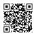

+2011.10.12
[ニョアの手記 98]更新
+2011.07.28
『 夏のコナミポイント10％獲得キャンペーン 』
ただいまコナミスタイルで「The Epic of Zektbach」関連グッズを買うと、ポイント10％還元中！！！
関連グッズ一覧はこちら
+2011.06.17
[ニョアの手記 97]更新
+2011.03.28
The Epic of Zektbach -Masinowa-
シャムシールの舞＜OVA＞
タロットカード
スタイルショップ店頭及びコナミスタイル通販サイトでの購入は問題なく行われます。
但し、発送に関しては、一部地域に関しては配送の都合により発売日に届かない可能性はあります。
The Epic of Zektbach -Masinowa-（SMD版）の発売日が4月6日で決定しました。
コナミスタイルショップでも同様となります。
The Epic of Zektbach -Masinowa- 特設サイト
+2011.02.25
[ニョアの手記 96]更新
+2011.02.17
[ニョアの手記 95]更新
++2010.02.01
[ニョアの手記 94]更新
+2010.12.29
[ニョアの手記 93]更新
+2010.11.22
[ニョアの手記 92]更新
+2010.09.22
[ニョアの手記 91]更新
+2010.09.15
[ニョアの手記 90]更新
+2010.08.04
[ニョアの手記 89]更新
+2010.07.22
[ニョアの手記 88]更新
「The Epic of Zektbach Novel CD Series ～Blind Justice～」予約開始！
http://www.konamistyle.jp/sp/zektbach_novel_01/
+2010.07.15
[ニョアの手記 87]更新
Zektbachケータイコーナー大幅リニューアル！！
ついにケータイに王立図書館が登場！！
書き下ろしの物語、待ち受け画像などの続々新アイテムを配信中！
さあ、今すぐ冒険に出てみよう！！

http://sev.konami.net/sev/?param=zektbach_c
+2010.06.16
[ニョアの手記 86]更新
+2010.05.19
[ニョアの手記 85]更新
+2010.04.28
[ニョアの手記 84]更新
+2010.04.14
[ニョアの手記 83]更新
+2010.04.07
「The Epic of Zektbach -PIANO
COLLECTION-」より
「Overture -Ristaccia-序曲～リスタチア～」着うたフル（R）配信開始
[ニョアの手記 82]更新
+2010.03.31
最新アルバム豪華盤好評発売中！ドラマCDの試聴開始！
「The Epic of Zektbach -PIANO
COLLECTION-」より
「Aria te'Laria メインテーマ ～アリア・テ・ラリア～」着うたフル（R）配信開始
[ニョアの手記 81]更新
+2010.03.24
「The Epic of Zektbach -PIANO
COLLECTION-」本日発売、収録楽曲の着うたフル（R）大好評配信中！
iTunes Storeにて「The Epic of Zektbach -Ristaccia-
」全収録楽曲の配信開始！
[ニョアの手記 80]更新
+2010.03.17
「The Epic of Zektbach -PIANO COLLECTION-」より
「Shamshir Dance シャムシールの舞」、「Turii ～Panta rhei～ トゥーリと星の民」着うたフル（R）配信開始
[ニョアの手記 79]更新
+2010.03.10
最新アルバム豪華盤楽譜イメージ画像＆DVD収録ムービー視聴公開！
[ニョアの手記 78]更新
+2010.03.04
コナミネットDXにてZektbach新譜ジャケット3月カレンダー待受配信
[チャコルの手記]更新
+2010.02.24
[ニョアの手記 77]更新
+2010.02.17
[ニョアの手記 76]更新
+2010.02.10
新作アルバム特設ページリニューアル
[WORKS][ニョアの手記 75]更新
+2010.02.03
新作アルバム通常盤ジャケット＆豪華盤同梱 楽譜の詳細発表
[ニョアの手記 74]更新
+2010.01.27
[ニョアの手記 73]更新
ZektbachケータイコーナーOPEN！！
ついにケータイにもアリア・テ・ラリアへの入口が登場！！
待受画像、メール素材などのアイテムを配信中！
今後新アイテムも続々登場予定。

+2010.01.21
[ニョアの手記 72]更新
+2010.01.13
アルバム楽曲リスト＆ドラマＣＤキャストなど一挙公開
[ニョアの手記 71]更新
+2010.01.06
「Raison
d'etre～交差する宿命～」着うたフル（R）配信開始
[ニョアの手記 70]更新
+2009.12.25
「The
Epic of Zektbach -FRAGMENTS OF ARIA TE'LARIA-」予約開始
[ニョアの手記 69]更新
+2009.12.24
[ニョアの手記 68]更新
+2009.12.16
[ニョアの手記 67]更新
+2009.12.09
[ニョアの手記 66]更新
+2009.12.02
[ニョアの手記 65]更新
+2009.11.25
[ニョアの手記 64]更新
+2009.11.18
[ニョアの手記 63]更新
+2009.11.11
[ニョアの手記 62]更新
+2009.10.29
[ニョアの手記 61]更新
+2009.10.21
コナミネットDXにて100名様にQUOカードが当る「Zektbach」に関するアンケートを11月4日まで実施
詳しくは今すぐケータイでアクセス!!

http://573.jp
[ニョアの手記 60]更新
+2009.10.07
[ニョアの手記 59]更新
+2009.09.16
「The Epic of Zektbach -Ristaccia-」全国レコード店にて販売開始
[ニョアの手記 58]更新
+2009.09.09
[ニョアの手記 57]更新
+2009.09.02
[STORY ゼクトバッハ叙事詩第3章第1節第3話『大蛇』][ニョアの手記 56]更新
+2009.08.26
[ニョアの手記 55]更新
+2009.08.19
[ニョアの手記 54]更新
+2009.08.12
[ニョアの手記 53]更新
+2009.08.06
[ニョアの手記 52]更新
+2009.07.29
[ニョアの手記 51]更新
+2009.07.22
[ニョアの手記 50]更新
+2009.07.16
[ニョアの手記 49]更新
+2009.07.08
[ニョアの手記 48]更新
+2009.07.01
[ニョアの手記 47]更新
+2009.06.24
[ニョアの手記 46]更新
+2009.06.17
[ニョアの手記 45]更新
+2009.06.11
[ニョアの手記 44]更新
+2009.06.10
「Apocalypse, avec orgue
ｾﾞｸﾄﾊﾞｯﾊ叙事詩第四章より」着うたフル（R）配信開始
+2009.06.03
「Blind Justice, le concerto
ｾﾞｸﾄﾊﾞｯﾊ叙事詩第三章より」着うたフル（R）配信開始
+2009.05.27
「ZETA, la chanson
ｾﾞｸﾄﾊﾞｯﾊ叙事詩第二章より」着うたフル（R）配信開始
[ニョアの手記 43]更新
+2009.05.20
「Danza de Shamshir,a la turque
ｾﾞｸﾄﾊﾞｯﾊ叙事詩第一章より」着うたフル（R）配信開始
[ニョアの手記 42]更新
+2009.05.13
「Ouverture de Ristaccia, presto agitato
ｾﾞｸﾄﾊﾞｯﾊ叙事詩序章より」着うたフル（R）配信開始
「Turii ～Panta rhei～」着うたフル（R）配信開始
[ニョアの手記 41]更新
+2009.05.07
「Nyoah's Sword Dance 華麗なるニョアの剣舞」着うたフル（R）配信開始
+2009.05.01
「L'erisia(Primal Logic) 赤き天使」着うたフル（R）配信開始
+2009.04.22
[ニョアの手記 40]更新
「The Epic of Zektbach -Ristaccia-
」通常盤ジャケットイラストの壁紙 配布開始！
「Turii ～Panta rhei ～トゥーリと星の民」着うたフル（R）配信開始
+2009.04.15
[ニョアの手記 39]更新
「Apocalypse 罪狩りの聖女」着うたフル（R）配信開始
+2009.04.08
[ニョアの手記 38]更新
「Blind Justice それぞれの正義」着うたフル（R）配信開始
+2009.04.01
[ニョアの手記 37]更新
「ZETA 素数の世界と超越者」着うたフル（R）配信開始
+2009.03.25
[ニョアの手記 36]更新
「Shamshir Dance ｼｬﾑｼｰﾙの舞」着うたフル（R）配信開始
+2009.03.21
アルバム本日発売!収録楽曲3曲を着うたフル(R)にて本日配信開始!
+2009.03.19
「The Epic of Zektbach
-Ristaccia-」2009.03.21on Sale ！
アルバム発売同日より着うたフル（R）配信開始決定！
+2009.03.18
[Introduction The Epic of Zektbach -Ristaccia-全楽曲試聴を公開!][ニョアの手記 35]更新
+2009.03.11
[STORY ゼクトバッハ叙事詩第1章第1節第2話『疾風迅雷』][ニョアの手記 34]更新
+2009.03.04
[ニョアの手記 33]更新
+2009.02.25
[ニョアの手記 32]更新
+2009.02.18
[ニョアの手記 31]更新
+2009.02.12
1stアルバム オーケストレーションバージョン試聴開始
[STORY ゼクトバッハ叙事詩第4章第1節第4話『啓示』][ニョアの手記 30]更新
+2009.02.04
[ニョアの手記 29]更新
+2009.01.28
[ニョアの手記 28]更新
+2009.01.21
[ニョアの手記 27]更新
+2009.01.14
[STORY 『Turii』][ニョアの手記 26]更新
+2008.12.24
[ブログパーツ第二弾配布開始][ニョアの手記 25]更新
+2008.12.17
[ニョアの手記 24]更新
+2008.12.10
[ニョアの手記 23]更新
+2008.12.03
[ニョアの手記 22]更新
+2008.11.26
[ニョアの手記 21]更新
+2008.11.19
[ニョアの手記 20]更新
+2008.11.12
[The Epic of Zektbach -Ristaccia-予約開始][ブログパーツ配布開始][ニョアの手記 19]更新
+2008.11.05
[STORY ゼクトバッハ叙事詩第2章第5節第4話『すぎたる知と武』][ニョアの手記 18]更新
+2008.10.29
[ニョアの手記 17]更新
+2008.10.22
[STORY ゼクトバッハ叙事詩第4章第1節第1話『聖女アンネース』][ニョアの手記 16]更新
+2008.10.15
[ニョアの手記 15]更新
+2008.10.08
[STORY ゼクトバッハ叙事詩第3章第1節第2話『マングローブの名もなき村で』][ニョアの手記 14]更新
+2008.10.01
[ニョアの手記 13] 更新
+2008.09.24
[ニョアの手記 12] 更新
+2008.09.17
[STORY ゼクトバッハ叙事詩第3章第1節第1話『女王マタン』] [ニョアの手記 11]更新
+2008.09.11
[ニョアの手記 10] 更新
+2008.09.03
[STORY ゼクトバッハ叙事詩第2章第4節第8話『目覚めし刻印』] [ニョアの手記 9]更新
+2008.08.27
[ニョアの手記 8] 更新
+2008.08.20
[Story][ニョアの手記 7,5] 更新
+2008.08.13
[ニョアの手記 7] 更新
+2008.08.06
[Story][ニョアの手記 6] 更新
+2008.08.01
[Story][ニョアの手記 5] 更新
+2008.07.23
[ニョアの手記 4] 更新
+2008.07.16
[ニョアの手記 3] 更新
+2008.07.11
[ニョアの手記 2] 更新
+2008.07.02
The Epic of Zektbach サイトオープン
+2008.06.13
The Epic of Zektbach ティザーサイトオープン